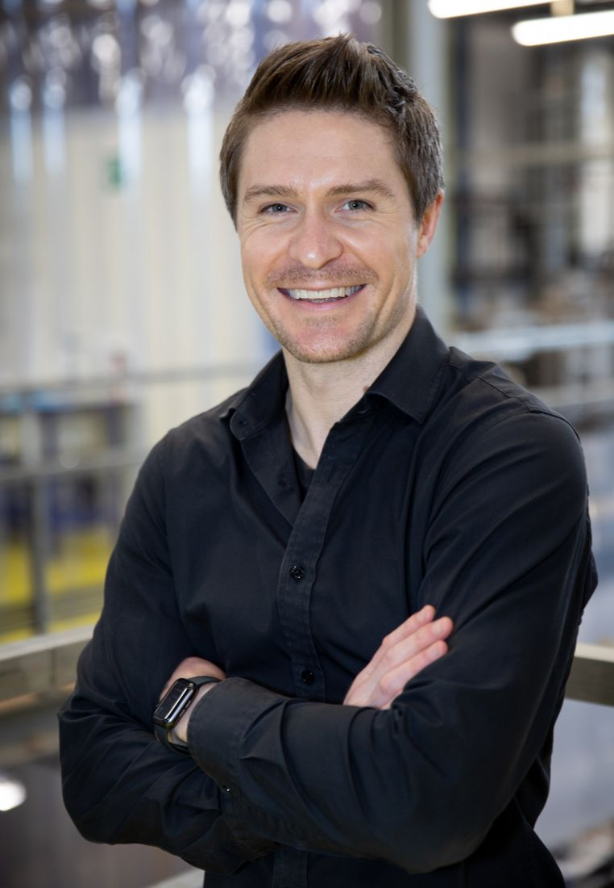
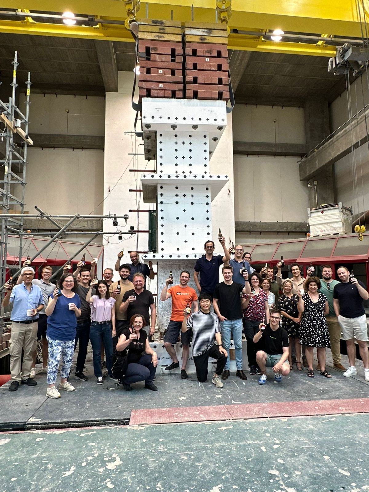
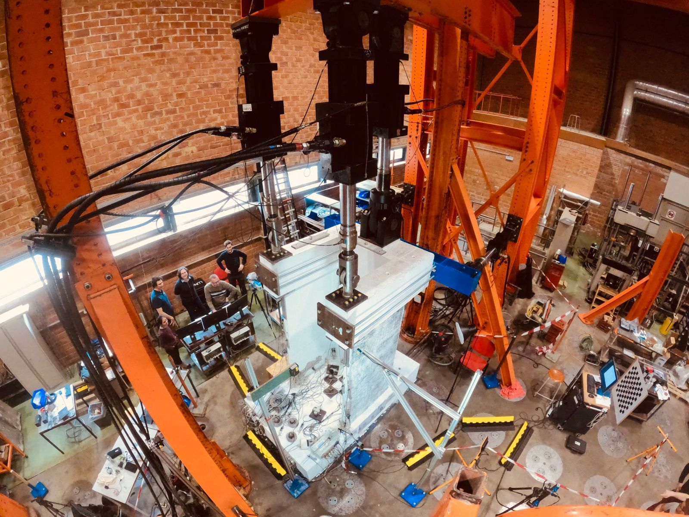
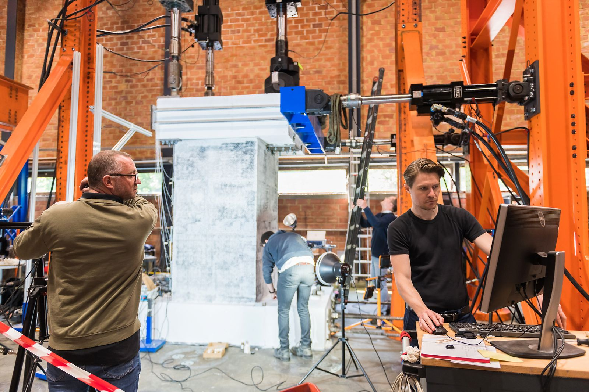
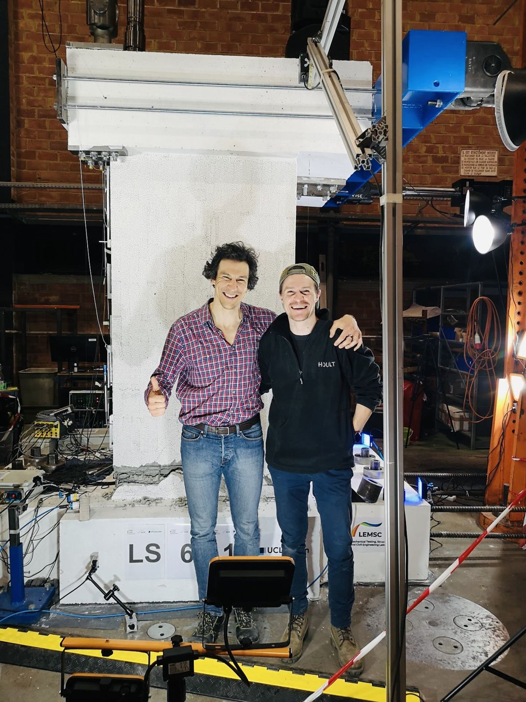
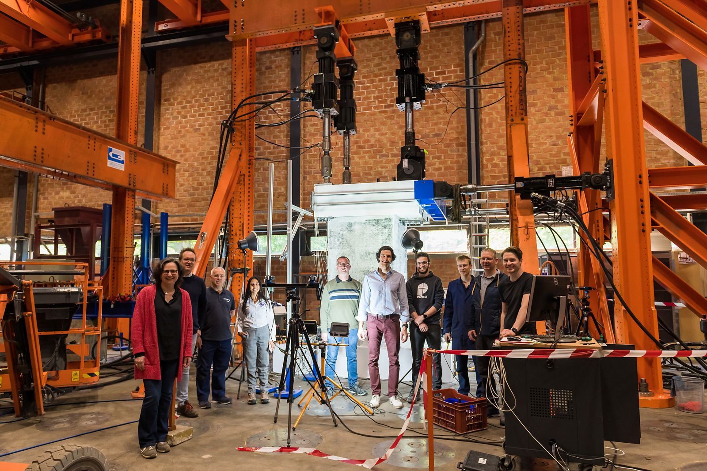
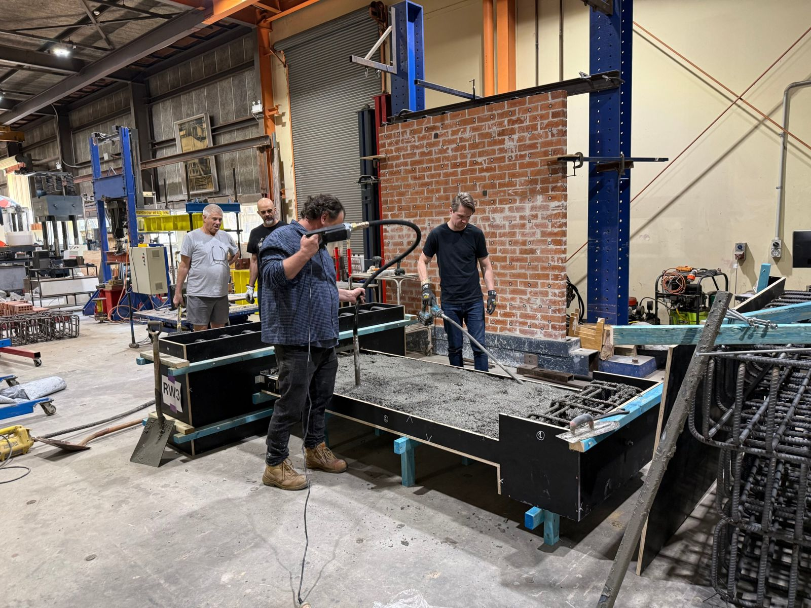

Dr Ryan Hoult
I design and run large-scale tests on reinforced concrete walls and cores, and turn the results into design guidance for safer, more durable buildings.
Senior Lecturer in Civil Engineering, University of Newcastle, Australia. President-elect, Australian Earthquake Engineering Society.

What I work on
Most mid- and high-rise buildings rely on concrete core walls to resist earthquakes and wind, yet design rules are largely based on tests of simple rectangular walls. My research closes that gap.
Non-planar walls under torsion and flexure
Experiments and models of U-, C- and H-shaped walls under combined axial load, bending and twisting, including shake-table tests of two 40-tonne U-shaped cores.
Advanced and durable reinforcement
Glass fibre-reinforced polymer (GFRP) and iron-based shape memory alloy bars for corrosion-free, low-damage and self-centring concrete structures.
Data-rich testing and AI
Fibre-optic strain sensing inside reinforcement, digital image correlation, motion capture and machine learning, producing open datasets others can build on.
Earthquake risk in Australia
Ground motions, seismic hazard and the vulnerability of Australian buildings, from the 2012 Moe earthquake to the Earthquake Ready Hunter project.
Large-scale test programs
I have designed and led test programs in four laboratories across Europe and Australia, from quasi-static reaction-frame tests to one of Europe's largest shake tables.
Slender U-shaped walls
Bi-directional quasi-static tests on two walls with a single layer of reinforcement.
Torsion, flexure and new materials
U-shaped walls under combined torsion and flexure, a GFRP-reinforced wall, and Fe-SMA and GFRP boundary elements.
40-tonne shake-table cores
Two U-shaped walls under uniaxial and bidirectional-torsional earthquake excitation (ERIES ALL4wALL).
GFRP-reinforced walls
Six half-scale walls built with industry partners, with final-year students developing new test methods.






Fibre-optic sensing
The first reported use of distributed fibre-optic sensors bonded to the reinforcement of RC walls, capturing full strain profiles into the foundation.
Digital image correlation
Full-field strain and crack measurement, with a processing method validated against embedded sensors and conventional instruments.
Motion capture and video tracking
Optical tracking of targets to measure the 3D response of walls during shake-table tests.
Data and blind predictions
Test data from my programs is published openly and used by research groups worldwide to validate their models.
Open test data
Full experimental datasets from the EPFL and UCLouvain wall programs, free to download and reuse.
EPFL dataset on Zenodo →Blind prediction
Two international competitions inviting teams to predict the response of the UCLouvain and LNEC walls before the results were released.
Competition page →Bulletin of Earthquake Engineering
Guest Editor of a 19-article special issue on modelling and design of RC structural walls, built around the blind prediction results.
Read the collection →Selected papers
34 journal articles, including in Earthquake Spectra, Journal of Structural Engineering and Engineering Structures. The full list is on Google Scholar.
- 2026
Axial tests on concrete wall boundary elements reinforced with FeSMA and GFRP
Hoult & Almeida · Bulletin of Earthquake Engineering
doi:10.1007/s10518-026-02519-4 - 2025
Shake-table tests on two 40-ton reinforced concrete U-shaped walls with uniaxial and bidirectional-torsional response
Hoult, Correia, Bertholet et al. · Earthquake Spectra
doi:10.1177/87552930251378247 - 2025
Plastic hinge length of RC shear walls: practical approximation via machine learning and probabilistic assessment
Jafari, Mirrashid, Hoult & Zhou · Engineering Failure Analysis
doi:10.1016/j.engfailanal.2024.109179 - 2023
Tests on reinforced concrete U-shaped walls subjected to torsion and flexure
Hoult, Doneux & Almeida · Earthquake Spectra
doi:10.1177/87552930231195315 - 2023
Core versus surface sensors for reinforced concrete structures: a comparison of fiber-optic strain sensing to conventional instrumentation
Hoult, Bertholet & Almeida · Sensors
doi:10.3390/s23031745 - 2022
Residual displacements of reinforced concrete walls detailed with conventional steel and shape memory alloy rebars
Hoult & Almeida · Engineering Structures
doi:10.1016/j.engstruct.2022.114002
Teaching
- Reinforced Concrete Design, redesigned for blended delivery with lightboard videos, online quizzes and an AI tutor that points students to the right clauses of AS 3600.
- Final-year research projects, with students working directly on large-scale wall tests.
- Previously at the University of Melbourne and UCLouvain: structural theory and design, statics, earthquake engineering, and online laboratory modules.
Join the group
I welcome enquiries from prospective PhD and research students interested in large-scale testing, advanced reinforcing materials, or earthquake engineering. Please send a short CV and a paragraph on the topic that interests you. I particularly encourage applications from women and under-represented groups in engineering.
Get in touch
DrRyanHoult@proton.me
School of Engineering, University of Newcastle, Callaghan NSW 2308, Australia